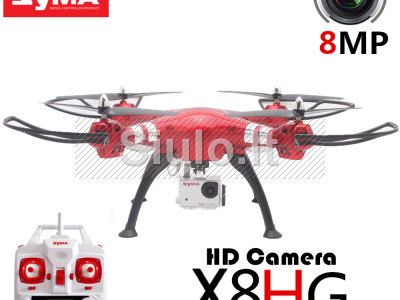

Welcome to Dronai
Dronai Pro filmavimui, fotografavimui, inspektavimui, termovizijai
2020.10.29 07:48Bepilotės skraidyklės bet kokiai užduočiai Facebook Email Instagram YouTube SUSISIEKITE +37069500033 SUSISIEKITE +37069500033 Prisijungti / Registruotis 0 items / € 0.00 Meniu 0 items / € 0.00 Naršyti kategorijas Energetika Filmavimas Geodezija Infrastruktūra Miškininkystė Pramogos Viešasis saugumas Statyba Žemės ūkis Parduotuvė Paslaugos Mokymai Ar jūsų dronas yra pasirengęs skristi Kaip paruošti savo ANAFI droną pirmam skrydžiu Mokymasis skristi su Parrot ANAFI dronų Servisas Pix4D Apie mus Kontaktai TINKLARAŠTIS PAGALBA
Įsigykite droną
Dronai Pro komanda patars, koks dronas geriausiai atitinka Jūsų užduočiai bei išrinktą droną pristatysime
Pirkti dabarPilotuokite
Mokymų metu išmoksite paruošti droną skydžiui ir įgysite pilotavimo įgūdžius
Išmokti dabarUžsakykite paslaugą
Atliksime užduotis, susijusias su drono pilotavimu (filmavimas, inspektavimas, termovizija)
Užsakyti dabarPRODUKTAI
PERŽIŪRĖTI VISUS PRODUKTUSDronai Pro prekiauja tik kokybiška, Jums naudinga produkcija .
Palyginti UždarytiANAFI PAGRINDINIS RĖMAS
€ 99.00ANAFI rėmas yra sustiprintas karbono pluoštu, sukuriant lengvą, tačiau atsparią struktūrą.
Suderinamas su šiais dronais: ANAFI, ANAFI FPV, ANAFI Thermal ir ANAFI Work Į krepšelį Quick View Palyginti UždarytiANAFI MECHANINIS RINKINYS
€ 99.00ANAFI rėmas yra sustiprintas karbono pluoštu, sukuriant lengvą, tačiau atsparią struktūrą.
Patentuota dvigubų kilpų sistema leidžia dronui apsisukti per mažiau nei 3 sekundes. Kad būtų užtikrintas stabilus ryšys, kiekviename iš drono stovų yra dviejų dažnių antena, sukurianti daugiapakopę duomenų perdavimo sistemą. Į krepšelį Quick View Sold out Palyginti UždarytiPARROT BLUEGRASS FIELDS DRONAS
€ 5,299.00Kompleksinis dronų sprendimas žemės ūkiui
Parrot Bluegrass Fields yra kompleksinis dronų sprendimas, apimantis visą pasėlių analizės darbo eigą. Šio pažangaus drono dėka žemės ūkio specialistai įgaus naujų žinių, norint pagerinti pasėlių kokybę ar padidinti derlingumą. - Patvarus ir lengvai valdomas Parrot Bluegrass Fields dronas; - Populiariausias Parrot Sequoia multispektrinis jutiklis ir 14 megapikselių priekinė RGB kamera ; - ParrotFields mobilioji aplikacija supaprastina visą darbo eigą lauko sąlygomis (metinė prenumerata) ; - Visa prieiga prie Pix4Dfields darbalaukio ir „debesies“ programinės įrangos, kad būtų galima nuodugniau analizuoti surinktus duomenis apie pasėlius (metinė prenumerata). Daugiau Quick View Palyginti UždarytiANAFI VARIKLIŲ RINKINYS
€ 99.00 ANAFI varikliai be šepetėlių veikia kartu (2 pagal laikrodžio rodyklę, 2 prieš laikrodžio rodyklę), sukurdami pažangius variklius, leidžiančius dronui pasiekti įspūdingą 55 km/val. greitį ir atlaikyti stiprų vėją iki 50 km/val. Suderinamas su šiais dronais: ANAFI ir ANAFI WORK Į krepšelį Quick View Palyginti UždarytiPARROT ANAFI THERMAL DRONAS
€ 2,199.00 Parrot ANAFI thermal dronas yra optimalus drono sprendimas, pritaikytas įvairių darbo sričių poreikiams. Šiuo sprendimu gali naudotis statybos pramonės ir viešųjų darbų specialistai, civilinės saugos ir gelbėjimo tarnybų ekspertai, energijos gamintojai, vežėjai ir aplinkosaugininkai. Net ir sudėtingomis sąlygomis galite lengvai ir saugiai nuskaityti terminius bei vizualinius rodmenis. Į krepšelį Quick View Palyginti UždarytiANAFI KELIONINIS KREPŠYS
€ 79.00 Sukurtas specialiai ANAFI, šis ypač kompaktiškas kelioninis krepšys tinka visiems elementams, kurių jums reikia, norint užfiksuoti nuostabius kadrus. Krepšys lengvai talpina ANAFI droną, Parrot Skycontroller 3, 2 papildomas išmaniąsias baterijas, C tipo USB laidus ir išmanųjį telefoną. Kelioninio k repšio dydis 30 cm x 21 cm x 11,5 cm. Suderinamas su šiais dronais: ANAFI ir ANAFI WORK Į krepšelį Quick View Palyginti UždarytiPARROT ANAFI WORK DRONAS
€ 1,199.00 ANAFI WORK Itin kompaktiški 4K dronai bet kokiam verslui. ANAFI Work yra ypač kompaktiškas įrankis profesionalams, padedantis jiems priimti pagrįstus sprendimus, naudojantis aerodinaminėmis drono žiniomis. -ANAFI Work sudaro pažangusis ANAFI dronas, kuriame integruota inovatyvi vaizdo formavimo sistema, 4K / 21MP kamera, kurios 180° vertikali orientacija leidžia lengvai gauti vaizdus iš sunkiai pasiekiamų vietų. - ANAFI Work sistema yra idealus įrankis, paruošiamas skrydžiui per trumpiausią laiką. Dronas veikia 1 valandą ir 40 minučių su 4 USB-C išmaniosiomis baterijomis. -Šį Parrot droną galima lengvai bet kur transportuoti patogiame kompaktiškame krepšyje. -ANAFI Work leidžia specialistams greitai ir lengvai kurti 3D pastatų modelius, naudojant metinę Pix4D modelio prenumeratą. Į krepšelį Quick View Palyginti UždarytiParrot Anafi SE dronas
Pirmasis Europoje ypač kompaktiškas dronas, skirtas specialios paskirties užduotims
(žvalgybai ir stebėjimui)
Daugiau Quick View Įkelkite daugiau produktų Loading... PARROT ANAFIDRONO PLATFORMA SUKURTA MEGĖJAMS IR PROFESIONALAMS
Anafi sulankstomi sraigtai
Galingi varikliai gali atlaikyti vėją iki 53 km per valandą. Tai yra vienas tyliausiai veikiančių dronų rinkoje.Anafi išmanusis akumuliatorius
Anafi turi LiPo USB-C akumuliatorių, kuris leidžia skristi dronui iki 25 minučių (26 minutes su ANAFI Thermal).
Daugiau
Kompaktiškos sulankstomos sraigto mentės
Patogaus dizaino dėklas apsaugo droną transportavimo metu. Nuėmus dėklą, ANAFI išsilanksto per mažiau nei 3 sekundes.Ypatingai patogus dizainas
Anafi yra ypač lengvai transportuojamas, kompaktiškas ir lengvas dronas, kurį galima gabenti visur.4K HDR 21 Mpx kamera / Termo kamera
4K HDR, 21 MP aukštos rezoliucijos kamera yra idealus įrankis bet kokiam profesionaliam arba megejiškam projektui įgyvendintiANAFI WORK DRONAS
DAUGIAUMIŠKŲ INVENTORIZACIJA
DAUGIAUAnafi Thermal
DAUGIAUPATARIMAI DRONO PILOTUI
DAUGIAUSPRENDIMAS ŽEMĖS ŪKIUI
DAUGIAUTINKLARAŠTIS
25 Sau BendraJAV siuntų pristatymas komerciniais dronais šiemet pagaliau bus realizuotas
25 sausio, 2020 Paskelbtas Dronai Pro 0 comments Facebook Twitter Email Pinterest Kai prieš šešerius metus „Amazon“ paviešino savo planus pristatinėti siuntas dronais, daugelis skeptikų piktinosi. Tai tiesiog neatrodė saugu ar prakt...Skaityti toliau
22 Sau BendraSkywatch.AI ir „Parazero“: dronų pilotai taupo pinigus draudimui, naudodami saugos sistemas
22 sausio, 2020 Paskelbtas Dronai Pro 0 comments Facebook Twitter Email Pinterest Du komercinių dronų erdvės žaidėjai ką tik paskelbė partnerystę, padėsiančią sumažinti komercinių dronų pilotų draudimo išlaidas. Tai partnerystė, kur...Skaityti toliau
10 Sau BendraPseudo-palydovas dronas nesustodamas skrido 25 dienas tuo pačiu pastatydamas naują pasaulio rekordą.
10 sausio, 2020 Paskelbtas Dronai Pro 0 comments Facebook Twitter Email Pinterest Saulės energija varomas dronas, skirtas įsitraukti į daugiamilijoninę dolerių kosmoso palydovų rinką, pasiekė rekordą beveik 26 dienas išbūdamas didel...Skaityti toliau
07 Sau BendraKodėl JAV padangių vis dar neužpildė dronai?
7 sausio, 2020 Paskelbtas Dronai Pro 0 comments Facebook Twitter Email Pinterest Svarbiausias dabartinis įstatymas Jungtinėse Amerikos Valstijose, liečiantis dronų rinką, yra tas, kad negalima skraidinti droną toliau už jūsų matymo...Skaityti toliau
06 Sau BendraKaip dronai, gabenantys medicinos reikmenis, gali gelbėti žmonių gyvybes
6 sausio, 2020 Paskelbtas Dronai Pro 0 comments Facebook Twitter Email Pinterest 2015 m. liepos 17 d. nedidelis dronas perskrido kalnuotą “Wise county” (JAV) apylinkę ir pargabeno vaistų siuntą į reikiamą kliniką. Šis heksakopteris...Skaityti toliau
Parrot mobilioji programėlė
Dronai Pro partneriai
PARROT DRONES: FOR THE BEST AERIAL VIDEOS AND PHOTOS
Apie
Filmavimas, geodezija, teritorijų vystymas, infrastruktūros tikrinimas, aplinkos stebėsena, žemės ūkio darbai ir visuomenės saugumas vykdomi efektyviau, naudojant dronus.
Ulonų g. 3, Vilnius+370 695 000 33
info@dronai.pro
Naujienos
JAV siuntų pristatymas komerciniais dronais šiemet pagaliau bus realizuotas
25 sausio, 2020Skywatch.AI ir „Parazero“: dronų pilotai taupo pinigus draudimui, naudodami saugos sistemas
22 sausio, 2020Informacija
Taisyklės drono pilotui Pirkimo taisyklės Privatumo politika Atsiskaitymas Garantija Grąžinimas LeidimaiRekvizitai
Įmonė: Dronai Pro, UAB
Įmonės kodas: 302576873
PVM kodas: LT100007816513
Adresas: Ulonų g.3, LT-08240 Vilnius
Telefonas: + 370 695 000 33
Žymos
agrodronai dronai dronas dronas su termovizija profesionalus dronai 2017 X Dronai Pro . Visos teisės saugomos. Meniu Kategorijos Energetika Filmavimas Geodezija Infrastruktūra Miškininkystė Pramogos Viešasis saugumas Statyba Žemės ūkis Parduotuvė Paslaugos Mokymai Servisas Apie mus Patarimai Ar jūsų dronas yra pasirengęs skristi Kaip paruošti savo droną pirmam skrydžiu Mokymasis skristi su Anafi dronų Tinklaraštis Kontaktai Prisijungti / RegistruotisPrekių krepšelis
UždarytiPRISIJUNGTI
Uždaryti Dar nėra paskyros? SUKURTI PASKYRĄ Scroll To Top Šioje svetainėje naudojami slapukai. Naršydami šią svetainę sutinkate su mūsų slapukų naudojimu. Daugiau Sutinku